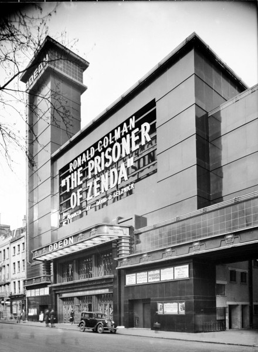

-
"Cinema is a matter of what's in the frame and what's out."
- Martin Scorsese
-
NTIX
-
RECYCLEBIN
The Astor Theatre
Melbourne, Australia
The Astor Theatre is a classic single-screen cinema built in 1936, known for its Art Deco architecture and vibrant cultural events. It has been lovingly restored and continues to screen a mix of classic and contemporary films. The Astor Theatre is cherished by Melburnians for its nostalgic atmosphere and dedication to the cinematic experience.

Le Grand Rex
Paris, France
Built in 1932, Le Grand Rex is the largest movie theater in Europe, known for its stunning Art Deco architecture. The auditorium features a grand stage, and its ceiling mimics a starry night sky. It continues to operate as a cinema and a venue for live performances, preserving its historical charm.

Le Grand Rex
Paris, France
Built in 1932, Le Grand Rex is the largest movie theater in Europe, known for its stunning Art Deco architecture. The auditorium features a grand stage, and its ceiling mimics a starry night sky. It continues to operate as a cinema and a venue for live performances, preserving its historical charm.
Grauman’s Chinese Theatre
Hollywood, USA
Opened in 1927, Grauman’s Chinese Theatre (now TCL Chinese Theatre) is famous for its grand Chinese-inspired architecture, featuring a pagoda-like facade and dragon sculptures. This iconic cinema hosted many Hollywood premieres and still functions as a movie theater today. The theater’s forecourt is known for its collection of celebrity handprints, footprints, and signatures in cement.